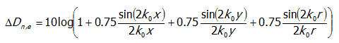
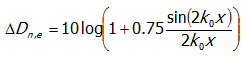
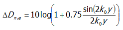

|
Top Previous Next |
|
In NPR 5272 staat een aantal tabellen die een richtlijn geven voor de waarde van Cpositie en Celevatie. In NPR 5272 wordt echter voor deze correcties geen rekenmodel gegeven dat kan worden gevalideerd. Derhalve is op basis van de aanwijzingen in NPR 5272 en NEN-EN 12354-3 een interpretatie gegeven van de bedoelde correcties. In NPR 5272 wordt niet aangegeven hoe met waarden die niet in de tabellen staan moet worden omgegaan. Daarnaast worden alle waarden afgerond op veelvouden van 0.5 dB zonder dat de afrondingsregels bekend zijn.
Voor Cpositie is uitgegaan van de formules uit bijlage D van NEN-EN 12354-3 met behulp van de formule 1 tot en met 3.
(1) Algemeen: 
(2) als y = 0: 
(3) als x = 0: 
Negatieve correcties die in de NPR 5272 wel voorkomen zijn afgerond naar 0 dB.
Voor Celevatie is uitgegaan van tabel A.12 uit NPR 5272. echter in deze tabel wordt voor vijf domeinen vier waarden gegeven! Dit is vooralsnog als volgt geïnterpreteerd:
Aan de normcommissie "Geluidwering in gebouwen" zal worden gevraagd om de NPR op deze punten te verduidelijken.
|